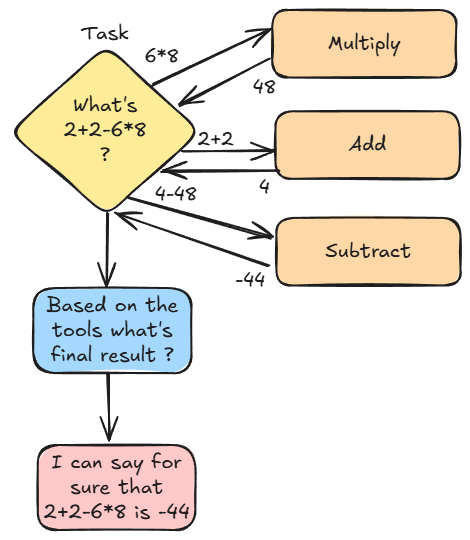
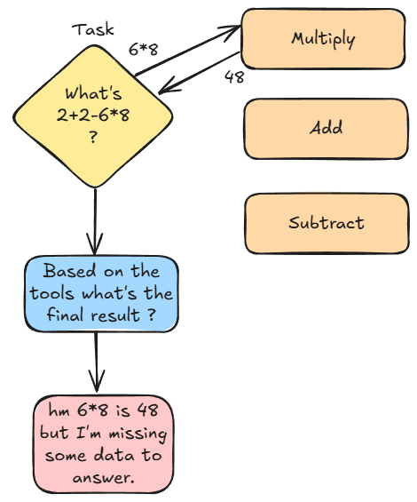
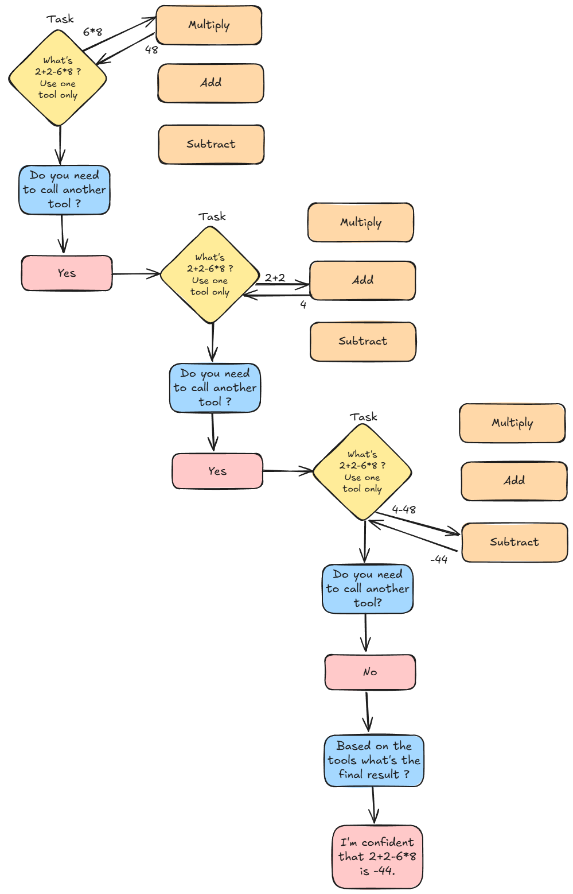

YouTube video for this section is still under creation. Please be patient ^^

Other frameworks assign their tools to the agent during its initialization. This creates a hard link between the tools and the agents. In our opinion, this implementation tends to confuse the agent because it's getting access to many tools that may not be relevant to the immediate task it is given. In Yacana tools are only available at the Task level. Thus no noise is generated before having to solve a particular task. The tool is made available to the LLM only when it's needed and not before. Also, the Agent doesn't keep the memory of the available tools so it won't be tempted to use them elsewhere, where it wouldn't be appropriate.
A side note for beginners...
You might wonder: how can a text-generating AI call a Python function? Well, it can't. Not directly.
When we talk about tool calling (sometimes called function calling), we’re referring to a specific process: the LLM outputs a well-structured JSON object that describes a function to call, including its name and the parameters to use. These parameters, and their values, are generated by the model.
Since LLMs don’t normally speak JSON, it’s easy to detect when they’re trying to call a function. If the output matches the expected JSON structure, we parse it and trigger the corresponding Python function with the provided parameters. Otherwise, the LLM’s response is treated like any regular reply, and the workflow continues.
But how does the model know which functions it can call, and how to call them? Before the LLM can make any function call, you must send it a message containing two things:
This tool list is itself a JSON array. It includes each function’s name, description, and the parameters it accepts, including the expected types.
The types are important: passing "4" (a string) instead of 4 (an integer) can break the call or cause bugs.
Some parameters may also be marked as optional, allowing the LLM to skip the function call if it feels it can answer the task directly.
The most widely used standard for function calling comes from OpenAI. But not all LLMs can follow it. Why? Because function calling requires specialized training.
Most LLMs are trained to follow instructions in a chat format, usually with USER and ASSISTANT messages. But for tool use,
a third message type — TOOL — is needed, and only certain models (like Llama, Gemma, or DeepSeek) are fine-tuned to handle it correctly.
Unfortunately, the OpenAI JSON format can be quite heavy, and smaller models (like basic 7B or 8B models) often struggle with it. That’s why Yacana includes its own lightweight function-calling format. It’s easier for smaller models to handle and uses percussive maintenance to nudge the model into outputting valid JSON.
As a result, Yacana enables tool calling with almost any LLM, while still supporting the OpenAI format when needed.
Let's write our first tool call to perform a simple addition!
First, let's define our tool:
def adder(first_number: int, second_number: int) -> int:
print(f"Tool adder was called with param {first_number}) ({type(first_number)} and {second_number} ({type(second_number)})")
return first_number + second_number
What do we have here?
adder ;
⚠️ Be aware that whatever the return of your function, Yacana will cast it to string using the
built-in str(...) function. LLMs can only understand text so make sure that
whatever you send back can be cast correctly (override the str if needed).
Let's create a Tool instance using the Yacana Tool constructor. It takes a
name (no space), a description, and a reference to the actual function.
I can only emphasize once more on the importance of
providing an accurate description.
adder_tool: Tool = Tool("Adder", "Adds two numbers and returns the result", adder)
Now let's assign our adder_tool to a Task. How to do that? It's simple, the Task() class
takes an optional tools=[] parameter. It's an array so be sure not to forget those
[]!
Task(f"What's 2+2 ?", agent1, tools=[adder_tool]).solve()
Full code:
from yacana import OllamaAgent, Tool, Task
def adder(first_number: int, second_number: int) -> int:
print(f"Tool adder was called with param {first_number} {type(first_number)} and {second_number} ({type(second_number)})")
return first_number + second_number
agent1 = OllamaAgent("Ai assistant", "llama3.1:8b")
adder_tool: Tool = Tool("Adder", "Adds two numbers and returns the result", adder)
result: str = Task(f"What's 2+2 ?", agent1, tools=[adder_tool]).solve().content
print("Equation result = ", result)
▶️ Output:
INFO: [PROMPT][To: Ai assistant]: I give you the following tool definition that you must use to fulfill a future task: adder(first_number: int, second_number: int) -> int - Adds two numbers and returns the result. Please acknowledge the given tool.
INFO: [AI_RESPONSE][From: Ai assistant]: Thank you for providing me with the `adder` tool definition! I understand that this is a function that takes two integer arguments (`first_number` and `second_number`) and returns an integer result, which represents the sum of these two input numbers.
I will keep this in mind as we progress through our tasks. Please go ahead and give me the next instruction or task to complete!
INFO: [PROMPT][To: Ai assistant]: To use the tool you MUST extract each parameter and use it as a JSON key like this: {"arg1": "<value1>", "arg2": "<value2>"}. You must respect the arguments type. For instance, the tool `getWeather(city: str, lat: int, long: int)` would be structured like this {"city": "new-york", "lat": 10, "lon": 20}. In our case, the tool call you must use must look like that: {'first_number': 'arg 0', 'second_number': 'arg 1'}
INFO: [AI_RESPONSE][From: Ai assistant]: Thank you for clarifying how to structure the tool calls.
In that case, I will extract each parameter and use it as a JSON key. For the `adder` tool, I will structure the tool call as follows:
{'first_number': 3, 'second_number': 5}
Please let me know what's next!
INFO: [PROMPT][To: Ai assistant]: You have a task to solve. Use the tool at your disposition to solve the task by outputting as JSON the correct arguments. In return you will get an answer from the tool. The task is:
What's 2+2 ?
INFO: [AI_RESPONSE][From: Ai assistant]: {"first_number": "2", "second_number": "2"}
Tool adder was called with param '2' (<class 'str'>) and '2' (<class 'str'>)
Equation result = 22
The multiple INFO logs you are seeing here is Yacana doing its magic to make the LLM call the tool.
Unfortunately, even though the tool is indeed called, getting a correct result failed
spectacularly! ^^
Is 2 + 2 = 22? No, I don't think so. Can you find out what went wrong?
When looking at the logs we can see that the tool was called with the following JSON:
{"first_number": "2", "second_number": "2"}. The values are of type
string. Later confirmed by the print() inside the tool itself:
param '2' ('str') and '2' ('str').
So instead of having integers, we got strings and what's the result of "2" + "2" in
Python?
Not "4" but "22" (concatenation of strings). Bummer! ^^
Fortunately, we can fix this easily in several ways.
As you saw in the previous adder example we ran into trouble with the 2 + 2 call
sent as a string. Let's fix that.
Since LLMs are not deterministic, we can never be certain of the values they’ll send to our tools. That’s why you should think of a tool the same way you would a web server route,it requires server-side validation. Your tool must verify the input it receives and raise an error if the data is invalid.
This involves adding strict validation checks to your tool.
When the LLM sends an incorrect value, an error will be raised, not just any error, but a ToolError(...).
Yacana will catch this exception and notify the LLM that something went wrong during the tool call.
It’s crucial to provide clear and specific error messages in the exception, as the LLM will use that message to adjust its next attempt.
Let's upgrade our adder tool!
from yacana import OllamaAgent, Tool, Task, ToolError
def adder(first_number: int, second_number: int) -> int:
print(f"Tool adder was called with param {first_number} {type(first_number)} and {second_number} ({type(second_number)})")
# Adding type validation
if not (isinstance(first_number, int)):
raise ToolError("Parameter 'first_number' expected a type integer")
if not (isinstance(second_number, int)):
raise ToolError("Parameter 'second_number' expected a type integer")
We added type validation on both parameters. But you should also check for None values, etc. As I said. Think of this as server-side validation. You cannot trust AI more than humans...
Let's remove the "examples" set in the previous section. The LLM will be blind once again. As such, he will probably make mistakes but the ToolError exception will guide it onto the correct path. Let's see:
Complete code
from yacana import OllamaAgent, Tool, Task, ToolError
agent1 = OllamaAgent("Ai assistant", "llama3.1:8b")
def adder(first_number: int, second_number: int) -> int:
print(f"Tool adder was called with param '{first_number}' ({type(first_number)}) and '{second_number}' ({type(second_number)})")
if not (isinstance(first_number, int)):
raise ToolError("Parameter 'first_number' expected a type integer")
if not (isinstance(second_number, int)):
raise ToolError("Parameter 'second_number' expected a type integer")
ret = first_number + second_number
print("Result of added tool is: ", ret)
return ret
adder_tool: Tool = Tool("Adder", "Adds two numbers and returns the result", adder)
result: str = Task(f"What's 2+2 ?", agent1, tools=[adder_tool]).solve().content
print(f"Equation result = {result}")
▶️ Output:
INFO: [PROMPT][To: Ai assistant]: I give you the following tool definition that you must use to fulfill a future task: adder(first_number: int, second_number: int) -> int - Adds two numbers and returns the result. Please acknowledge the given tool.
INFO: [AI_RESPONSE][From: Ai assistant]: Acknowledged!
I have taken note of the `adder` tool definition:
`adder(first_number: int, second_number: int) -> int`
This tool takes two integer arguments, `first_number` and `second_number`, and returns their sum as an integer.
I'm ready to use this tool when needed.
INFO: [PROMPT][To: Ai assistant]: To use the tool you MUST extract each parameter and use it as a JSON key like this: {"arg1": "<value1>", "arg2": "<value2>"}. You must respect argument type. For instance, the tool `getWeather(city: str, lat: int, long: int)` would be structured like this {"city": "new-york", "lat": 10, "lon": 20}. In our case, the tool call you must use must look like that: {'first_number': 'arg 0', 'second_number': 'arg 1'}
INFO: [AI_RESPONSE][From: Ai assistant]: Thank you for the clarification.
For the `adder` tool, I will extract each parameter and use it as a JSON key. Here is the result:
{"first__number": "arg 0", "second__number": "arg 1"}
I will make sure to respect the argument types (in this case, both are integers) when using this structure in the future.
Thank you for the guidance!
INFO: [PROMPT][To: Ai assistant]: You have a task to solve. Use the tool at your disposition to solve the task by outputting as JSON the correct arguments. In return, you will get an answer from the tool. The task is:
What's 2+2 ?
INFO: [AI_RESPONSE][From: Ai assistant]: {"first__number": 2, "second__number": 2}
WARNING: Yacana failed to call tool 'Adder' correctly based on the LLM output
INFO: [PROMPT][To: Ai assistant]: The tool returned an error: `adder() got an unexpected keyword argument 'first__number'`
Using this error message, fix the JSON arguments you gave.
Remember that you must output ONLY the tool arguments as valid JSON. For instance: {'first_number': 'arg 0', 'second_number': 'arg 1'}
INFO: [AI_RESPONSE][From: Ai assistant]: {"first_number": "arg 0", "second_number": "arg 1"}
Tool adder was called with param 'arg 0' (<class 'str'>) and 'arg 1' (<class 'str'>)
WARNING: Tool 'Adder' raised an error
INFO: [PROMPT][To: Ai assistant]: The tool returned an error: `Parameter 'first_number' expected a type integer`
Using this error message, fix the JSON arguments you gave.
INFO: [AI_RESPONSE][From: Ai assistant]: {"first_number": 2, "second_number": 2}
Tool adder was called with param '2' (<class 'int'>) and '2' (<class 'int'>)
Result of added tool is: 4
Equation result = 4
It worked!
2 warnings happened here:
{"first__number": "arg 0", "second__number": "arg 1"}. The first parameter was
called with two underscores for some reason (LLMs...). Fortunately, Yacana banged on the
LLM's head and it was fixed in the next iteration.
The tool returned an error: Parameter 'first_number' expected a type integer.
This is only logical as the LLM sent catastrophic values to the tool:
{'first_number': 'arg 0', 'second_number': 'arg 1'}. When the ToolError was
raised the error message was given to the LLM and a third iteration started. This time all
was correct: {"first_number": 2, "second_number": 2} and we got our result from
the tool which is 4.
If you followed this tutorial from the start, you saw that multi-shot prompting can sometime help getting more accurate outputs.
The Tool class allows this too, using the usage_examples=[] optional
parameter. You can provide a Python dictionary where each key corresponds to a function's
parameter and the value, a valid value. It's inside an array so you can provide multiple
examples if needed. In general one or two is enough.
These dictionaries will be presented by Yacana to the LLM as examples of how to call the tool
correctly.
Let's look at an example with this new tool instance:
adder_tool: Tool = Tool("Adder", "Adds two numbers and returns the result", adder, usage_examples=[{"first_number": 2, "second_number": 4}, {"first_number": 8, "second_number": -2}])
We provided above two examples for the LLM to look at. Each time giving first_number
and second_number different integer values. No strings. Actual integers!
Let's run our program again and see if we get the correct input types this time:
INFO: [PROMPT][To: Ai assistant]: I give you the following tool definition that you must use to fulfill a future task: adder(first_number: int, second_number: int) -> int - Adds two numbers and returns the result. Please acknowledge the given tool.
INFO: [AI_RESPONSE][From: Ai assistant]: Acknowledged!
The tool definition provided is:
`adder(first_number: int, second_number: int) -> int`
This tool takes two integer inputs `first_number` and `second_number`, and returns their sum as an integer.
I'm ready to use this tool for any future tasks that require addition!
INFO: [PROMPT][To: Ai assistant]: To use the tool you MUST extract each parameter and use it as a JSON key like this: {"arg1": "<value1>", "arg2": "<value2>"}. You must respect the arguments type. For instance, the tool `getWeather(city: str, lat: int, long: int)` would be structured like this {"city": "new-york", "lat": 10, "lon": 20}. In our case, the tool call you must use must look like that: {'first_number': 'arg 0', 'second_number': 'arg 1'}
INFO: [AI_RESPONSE][From: Ai assistant]: I understand now!
So, for the `adder` tool, I need to extract each parameter and structure it as a JSON key-value pair. Here's the result:
{'first_number': 'int', 'second_number': 'int'}
This means that when using this tool, I should specify two integer values for `first_number` and `second_number`, respectively.
INFO: [PROMPT][To: Ai assistant]: You have a task to solve. Use the tool at your disposition to solve the task by outputting as JSON the correct arguments. In return, you will get an answer from the tool. The task is:
What's 2+2 ?
INFO: [AI_RESPONSE][From: Ai assistant]: {"first_number": 2, "second_number": 2}
Tool adder was called with param '2' (<class 'int'>) and '2' (<class 'int'>)
Equation result = 4
It worked!
The LLM saw that the tool needed integers for input. As such, it called the tool with the correct
types therefore the adder tool returned 4 as it was expected. Hurray!
⚠️ Do not abuse this technic as it tends to create some noise. Trying to manage too many hypothetical use cases might, in the end, degrade the performance of the tool call.
You should combine both server-side validation and multi-shot prompting.
Providing one example may prevent one tool call failure hence less lost CPU time.
Though, adding many validation checks in your tool raising with explicit
error messages is the best way to ensure that nothing breaks! Nothing beats good all fashion
if checks!
What happens if the LLM is stubborn and gets stuck in a loop? Even though Yacana's percussive
maintenance should avoid that by shifting LLM internal configuration during runtime more or less
randomly, the LLM still might go into an infinite loop. And this is NOT a viable option!
Fortunately, Yacana comes with a default of 5 iterations (tries) for each of the 2 types of
errors we encountered earlier:
"first__number" error seen above.MaxToolErrorIter exception. You should try/catch all of your
Tasks that utilize Tools as they might loop too many times and trigger this exception.
However, you can also set these counters to the value you wish... Move them higher or lower with
the following Tool optional parameters:
max_call_error: int = 5, max_custom_error: int = 5
For instance:
# Doubling the number of iterations the LLM can do before raising `MaxToolErrorIter`: 5 -> 10
adder_tool: Tool = Tool("Adder", "Adds two numbers and returns the result", adder, max_custom_error=10, max_call_error=10)
Both can call functions inside your application but have pros and cons.
▶️ A tool should use OpenAi style when:
tool_type= parameter in the Tool's constructor.ToolType.YACANA or ToolType.OPENAI.
from yacana import OllamaAgent, Tool, Task, ToolError, ToolType
agent1 = OllamaAgent("Ai assistant", "llama3.1:8b")
def adder(first_number: int, second_number: int) -> int:
print(f"Tool adder was called with param '{first_number}' ({type(first_number)}) and '{second_number}' ({type(second_number)})")
if not (isinstance(first_number, int)):
raise ToolError("Parameter 'first_number' expected a type integer")
if not (isinstance(second_number, int)):
raise ToolError("Parameter 'second_number' expected a type integer")
ret = first_number + second_number
print("Result of added tool is: ", ret)
return ret
# => Here we set the tool type to OPENAI
adder_tool: Tool = Tool("Adder", "Adds two numbers and returns the result", adder, tool_type=ToolType.OPENAI)
result: str = Task(f"What's 2+2 ?", agent1, tools=[adder_tool]).solve().content
print(f"Equation result = {result}")
INFO: [PROMPT][To: Ai assistant]: What's 2+2 ?
WARNING: You chose to use the OpenAI style tool calling with the OllamaAgent for the tool 'Adder'. This tool is set by default as optional=False (hence making it mandatory to use). Note that Ollama does NOT support setting tools optional status on tools! They are all optional by default and this cannot be changed. Yacana may in the future mitigate this issue. If this is important for you please open an issue on the Yacana Github. You can hide this warning by setting `shush=True` in the Tool constructor.
INFO: [AI_RESPONSE][From: Ai assistant]: [{"id": "756f8bd1-0df9-471a-8463-dcc9ed36d68b", "type": "function", "function": {"name": "Adder", "arguments": {"first_number": 2, "second_number": 2}}}]
Tool adder was called with param '2' (<class 'int'>) and '2' (<class 'int'>)
Result of added tool is: 4
INFO: [TOOL_RESPONSE][Adder]: 4
INFO: [PROMPT][To: Ai assistant]: Retrying with original task and tools answer: 'What's 2+2 ?'
INFO: [AI_RESPONSE][From: Ai assistant]: Simple math problem! The answer is indeed 4.
Equation result = Simple math problem! The answer is indeed 4.
[{"id":
"XX", "type": "function", "function": {"name": "Adder", "arguments": {"first_number": 2, "second_number": 2}}}].tool_type member of a Tool instance during runtime and not only in the constructor.tool_instance.tool_type=ToolType.OPENAI.
Sometimes you assign a Tool to a Task without knowing for sure that the tool will be useful. If
you have a fine-tuned model or doing basic operations you may want to rely on the LLM's
reasoning to choose if it really needs to call the tool or use his own training knowledge.
Setting the optional: bool = True will tweak how Yacana proposes the Tools to the
LLM, leaving it a chance to pass on the offer of the tool and use its own knowledge instead.
To demonstrate this, let's make a tool that returns a temperature from a city. It will return a
fake temperature as we don't really care.
We won't set
optional=True so it will be forced to use the tool:
from yacana import Task, OllamaAgent, Tool
def get_temperature(city: str) -> int:
return 20
agent1 = OllamaAgent("Ai assistant", "llama3.1:8b")
result: str = Task(f"What's the temperature in NY ?", agent1, tools=[Tool("get_temp", "Returns the celsius temperature of a given city", get_temperature)]).solve().content
print(f"Temperature = {result}")
▶️ Output:
INFO: [PROMPT][To: Ai assistant]: I give you the following tool definition that you must use to fulfill a future task: get_temperature(city: str) -> int - Adds two numbers and returns the result. Please acknowledge the given tool.
INFO: [AI_RESPONSE][From: Ai assistant]: I've received the tool definition!
So, I understand that I have been given a tool called `get_temperature` that takes one argument `city` which is a string, and it's supposed to return an integer.
However, I notice that the tool definition says "Adds two numbers and returns the result" but the function name `get_temperature` suggests it should be related to getting the temperature of a city.
I'll make sure to keep this in mind for any future tasks that require using this tool!
INFO: [PROMPT][To: Ai assistant]: To use the tool you MUST extract each parameter and use it as a JSON key like this: {"arg1": "<value1>", "arg2": "<value2>"}. You must respect arguments type. For instance, the tool `getWeather(city: str, lat: int, long: int)` would be structured like this {"city": "new-york", "lat": 10, "lon": 20}. In our case, the tool call you must use must look like that: {'city': 'arg 0'}
INFO: [AI_RESPONSE][From: Ai assistant]: So I understand now. Thank you for the clarification!
To use the `get_temperature` tool, I will extract each parameter and use it as a JSON key with its corresponding value.
The tool definition is: `get_temperature(city: str) -> int`
So, I will structure my tool call like this: {"city": "arg0"}
Please let me know what's the next step!
INFO: [PROMPT][To: Ai assistant]: You have a task to solve. Use the tool at your disposition to solve the task by outputting as JSON the correct arguments. In return you will get an answer from the tool. The task is:
What's the temperature in NY ?
INFO: [AI_RESPONSE][From: Ai assistant]: { "city": "NY" }
Temperature = 20
The tool was called with { "city": "NY" } which returned 20. Good!
Now let's ask something completely unrelated but keep the tool mandatory:
result: str = Task(f"Why is the sky blue ?", agent1, tools=[Tool("get_temp", "Returns the celsius temperature of a given city", get_temperature)]).solve().content
▶️ Output:
INFO: [PROMPT][To: Ai assistant]: I give you the following tool definition that you must use to fulfill a future task: get_temperature(city: str) -> int - Returns the celsius temperature of a given city. Please acknowledge the given tool.
INFO: [AI_RESPONSE][From: Ai assistant]: Acknowledged!
You've provided me with a tool definition for `get_temperature(city: str) -> int`, which returns the Celsius temperature of a given city.
I'm ready to use this tool whenever I need it in future tasks!
INFO: [PROMPT][To: Ai assistant]: To use the tool you MUST extract each parameter and use it as a JSON key like this: {"arg1": "<value1>", "arg2": "<value2>"}. You must respect the arguments type. For instance, the tool `getWeather(city: str, lat: int, long: int)` would be structured like this {"city": "new-york", "lat": 10, "lon": 20}. In our case, the tool call you must use must look like that: {'city': 'arg 0'}
INFO: [AI_RESPONSE][From: Ai assistant]: For the `get_temperature( city: str ) -> int` tool, I understand that I need to extract each parameter and use it as a JSON key.
So, for this specific tool, I would structure my JSON call as follows:
{"city": "arg0"}
Where "arg0" is replaced with the actual value of the city I'm interested in.
INFO: [PROMPT][To: Ai assistant]: You have a task to solve. Use the tool at your disposition to solve the task by outputting as JSON the correct arguments. In return you will get an answer from the tool. The task is:
Why is the sky blue ?
INFO: [AI_RESPONSE][From: Ai assistant]: {"city": "Paris"}
Temperature = 20
It asked the tool for the temperature in the city 'Paris' without any particular reason. We can't blame it. The tool we provided and the Task to solve have nothing to do with each other. So it's making things up, like this city name.
Now let's make the tool optional with optional=True and keep our unrelated Task:
result: str = Task(f"Why is the sky blue ?", agent1, tools=[Tool("get_temp", "Returns the celsius temperature of a given city", get_temperature, optional=True)]).solve().content
▶️ Output:
INFO: [PROMPT][To: Ai assistant]: I give you the following tool definition that you may use to fulfill a future task: get_temperature(city: str) -> int - Returns the celsius temperature of a given city. Please acknowledge the given tool.
INFO: [AI_RESPONSE][From: Ai assistant]: Acknowledged!
I have taken note of the `get_temperature` tool, which takes a city name as input (`city: str`) and returns the Celsius temperature of that city (`-> int`). I'm ready to use this tool whenever you'd like me to fulfill a task in the future!
INFO: [PROMPT][To: Ai assistant]: To use the tool you MUST extract each parameter and use it as a JSON key like this: {"arg1": "<value1>", "arg2": "<value2>"}. You must respect arguments type. For instance, the tool `getWeather(city: str, lat: int, long: int)` would be structured like this {"city": "new-york", "lat": 10, "lon": 20}. In our case, the tool call you must use must look like that: {'city': 'arg 0'}
INFO: [AI_RESPONSE][From: Ai assistant]: So for the `get_temperature( city: str )` tool, I would extract the single parameter as:
{"city": "arg0"}
Please let me know what's next!
INFO: [PROMPT][To: Ai assistant]: You have a task to solve. In your opinion, is using the tool "get_temp" relevant to solve the task or not ? The task is:
Why is the sky blue ?
INFO: [AI_RESPONSE][From: Ai assistant]: Ha ha, that's an interesting question!
In my opinion, using the `get_temperature` tool is NOT relevant to solving this task. The task asks about why the sky is blue, and temperature doesn't seem to be directly related to that.
So, I'll have to come up with a different approach or use a different tool (if one exists) to tackle this question!
INFO: [PROMPT][To: Ai assistant]: To summarize in one word your previous answer. Do you wish to use the tool or not ? Respond ONLY by 'yes' or 'no'.
INFO: [AI_RESPONSE][From: Ai assistant]: no
INFO: [PROMPT][To: Ai assistant]: Why is the sky blue ?
INFO: [AI_RESPONSE][From: Ai assistant]: A question that has puzzled humans for centuries!
The sky appears blue because of a phenomenon called Rayleigh scattering, named after the British physicist Lord Rayleigh. Here's what happens:
1. **Sunlight**: The sun emits white light, which is made up of all the colors of the visible spectrum (red, orange, yellow, green, blue, indigo, and violet).
2. **Atmosphere**: When this sunlight enters Earth's atmosphere, it encounters tiny molecules of gases like nitrogen (N2) and oxygen (O2). These molecules are much smaller than the wavelength of light.
[BLABLA]
5. **Sky appears blue**: The combined effect of all these scattered blue and violet photons is what makes the sky appear blue to our eyes! The more direct sunlight that reaches our eyes, the whiter it will appear.
So, to summarize: the sky appears blue because of the selective scattering of shorter wavelengths (like blue and violet) by tiny molecules in the atmosphere, which dominates the colors we see when looking up at the sky.
As you can see it chose to ignore the tool when Yacana proposed it. It said:
In my opinion, using the `get_temperature` tool is NOT relevant to solving this task. The task asks about why the sky is blue, and temperature doesn't seem to be directly related to that.
ToolType.OPENAI you may encounter a minor issue.optional=False in
the Tool's constructor will have no effect.ToolType.YACANA (default).In this section, we will see that you can assign more than one tool to a Task. You can add as many Tools as you wish and the LLM will be asked what tool it wants to use. After using one of the tools it will be asked if it considers its Task complete. If it says "no" then Yacana will propose the list of tools again and a new iteration starts.
This is roughly what the tool-calling mechanism looks like:
This doesn't take into account many tweaks Yacana makes like model's runtime config updates (in case of infinite loops), optional tools, self-reflection, multi-shot tool call examples, history cleaning, exiting when reaching max iterations, etc. However, it's a good representation of the internal process of calling tools one after the other.
Additional behavior information:
When only one tool is assigned, the Agent won't be proposed to use it again. One tool is one shot! When giving multiple tools, the agent will then be proposed to use another tool. He could choose to always use the same one though.
In the future, Yacana may allow you to have more control over how the tools are being chosen.
⚠️ When assigning multiple tools to a Task, all Tools are considered optional! Setting the optional=True/False in the Task's constructor will not have any effects anymore!
Let's make a more advanced calculator and solve 2 + 2 - 6 * 8. We'll add the missing
tools and give them some
"server-side" checking to help the LLM use them properly.
from yacana import Task, OllamaAgent, Tool, ToolError
def adder(first_number: int, second_number: int) -> int:
print("Adder was called with types = ", str(type(first_number)), str(type(second_number)))
if not (isinstance(first_number, int)):
raise ToolError("Parameter 'first_number' expected a type integer")
if not (isinstance(second_number, int)):
raise ToolError("Parameter 'second_number' expected a type integer")
print(f"Adder was called with param = |{first_number}| and |{second_number}|")
return first_number + second_number
def multiplier(first_number: int, second_number: int) -> int:
print("Multiplier was called with types = ", str(type(first_number)), str(type(second_number)))
if not (isinstance(first_number, int)):
raise ToolError("Parameter 'first_number' expected a type integer")
if not (isinstance(second_number, int)):
raise ToolError("Parameter 'second_number' expected a type integer")
print(f"Multiplier was called with param = |{first_number}| and |{second_number}|")
return first_number * second_number
def substractor(first_number: int, second_number: int) -> int:
print("substractor was called with types = ", str(type(first_number)), str(type(second_number)))
if not (isinstance(first_number, int)):
raise ToolError("Parameter 'first_number' expected a type integer")
if not (isinstance(second_number, int)):
raise ToolError("Parameter 'second_number' expected a type integer")
print(f"substractor was called with param = |{first_number}| and |{second_number}|")
return first_number - second_number
agent1 = OllamaAgent("Ai assistant", "llama3.1:8b")
# Defining 3 tools
adder_tool: Tool = Tool("Adder", "Adds two numbers and returns the result", adder)
substractor_tool: Tool = Tool("Substractor", "Subtracts two numbers and returns the result. When having, for instance, 2 - 6 the arguments are 2 and 6 and not 2 and -6. The tool does the subtraction.", substractor, usage_examples=[{"first_number": 2, "second_number": 4}])
multiplier_tool: Tool = Tool("Multiplier", "Multiplies two numbers and returns the result.", multiplier)
# Creating a Task to solve and assigning tools to it
result: str = Task(
f"What's the result of '2 + 2 - 6 * 8'. Decompose the math before trying to solve it. Start with the multiplication. Use the tools at your disposal and do not do the maths yourself.",
agent1, tools=[
adder_tool,
substractor_tool,
multiplier_tool
]).solve().content
print("Result = ", result)
▶️ Output:
INFO: [PROMPT][To: Ai assistant]: You have access to this list of tools definitions you can use to fulfill tasks :
* Name: 'Adder' - Usage: adder(first_number: int, second_number: int) -> int - Description: Adds two numbers and returns the result
* Name: 'Substractor' - Usage: substractor(first_number, second_number) -> int - Description: Subtracts two numbers and returns the result. When having, for instance, 2 - 6 the arguments are 2 and 6 and not 2 and -6. The tool does the subtraction.
* Name: 'Multiplier' - Usage: multiplier(first_number, second_number) -> int - Description: Multiplies two numbers and returns the result.
Please acknowledge the given tools.
INFO: [AI_RESPONSE][From: Ai assistant]: I have access to the following tools:
1. **Adder**: Adds two numbers together and returns the result.
* Usage: `adder(first_number: int, second_number: int) -> int`
2. **Substractor**: Subtracts one number from another (regardless of order) and returns the result.
* Usage: `substractor(first_number, second_number) -> int`
3. **Multiplier**: Multiplies two numbers together and returns the result.
* Usage: `multiplier(first_number, second_number) -> int`
I'm ready to use these tools to perform mathematical operations!
INFO: [PROMPT][To: Ai assistant]: You have a task to solve. I will give it to you between these tags `<task></task>`. However, your actual job is to decide if you need to use any of the available tools to solve the task or not. If you do need tools then output their names. The task to solve is <task>What's the result of '2 + 2 - 6 * 8'. Decompose the math before trying to solve it. Start with the multiplication. Use the tools at your disposal and do not do the maths yourself.</task> So, would any tools be useful in relation to the given task ?
INFO: [AI_RESPONSE][From: Ai assistant]: To decompose the math expression '2 + 2 - 6 * 8', I need to follow the order of operations (PEMDAS/BODMAS). According to this rule, multiplication should be done before addition and subtraction.
So, the first step is to calculate the result of `6 * 8`. This requires using the **Multiplier** tool.
INFO: [PROMPT][To: Ai assistant]: In order to summarize your previous answer in one word. Did you chose to use any tools ? Respond ONLY by 'yes' or 'no'.
INFO: [AI_RESPONSE][From: Ai assistant]: Yes.
INFO: [PROMPT][To: Ai assistant]: You can only use one tool at a time. From this list of tools which one do you want to use: [Adder, Substractor, Multiplier]. You must answer ONLY with the single tool name. Nothing else.
INFO: [AI_RESPONSE][From: Ai assistant]: Yes
Multiplier
WARNING: Tool choice was not an exact match but a substring match
INFO: [PROMPT][To: Ai assistant]: To use the tool you MUST extract each parameter and use it as a JSON key like this: {"arg1": "<value1>", "arg2": "<value2>"}. You must respect arguments type. For instance, the tool `getWeather(city: str, lat: int, long: int)` would be structured like this {"city": "new-york", "lat": 10, "lon": 20}. In our case, the tool call you must use must look like that: {'first_number': 'arg 0', 'second_number': 'arg 1'}
INFO: [AI_RESPONSE][From: Ai assistant]: {'first_number': '6', 'second_number': '8'}
INFO: [PROMPT][To: Ai assistant]: Now that I showed you examples on how the tool is used it's your turn. Output the tool as valid JSON.
INFO: [AI_RESPONSE][From: Ai assistant]: {"first_number": "6", "second_number": "8"}
Multiplier was called with types = <class 'str'> <class 'str'>
WARNING: Tool 'Multiplier' raised an error
INFO: [PROMPT][To: Ai assistant]: The tool returned an error: `Parameter 'first_number' expected a type integer`
Using this error message, fix the JSON arguments you gave.
INFO: [AI_RESPONSE][From: Ai assistant]: {"arg1": 6, "arg2": 8}
WARNING: Yacana failed to call tool 'Multiplier' correctly based on the LLM output
INFO: [PROMPT][To: Ai assistant]: The tool returned an error: `multiplier() got an unexpected keyword argument 'arg1'`
Using this error message, fix the JSON arguments you gave.
Remember that you must output ONLY the tool arguments as valid JSON. For instance: {'first_number': 'arg 0', 'second_number': 'arg 1'}
INFO: [AI_RESPONSE][From: Ai assistant]: {"first_number": 6, "second_number": 8}
Multiplier was called with types = <class 'int'> <class 'int'>
Multiplier was called with param = |6| and |8|
INFO: [TOOL_RESPONSE][Multiplier]: 48
INFO: [PROMPT][To: Ai assistant]: Now that the tool responded do you need to make another tool call ? Explain why and what are the remaining steps are if any.
INFO: [AI_RESPONSE][From: Ai assistant]: The result of `6 * 8` is 48.
Next, I need to calculate the result of `2 + 2 - 48`. To do this, I need to use the **Adder** tool to add `2 + 2`, and then use the **Substractor** tool to subtract the result from the multiplication (`48`) from the sum.
INFO: [PROMPT][To: Ai assistant]: To summarize your previous answer in one word. Do you need to make another tool call ? Answer ONLY by 'yes' or 'no'.
INFO: [AI_RESPONSE][From: Ai assistant]: Yes
INFO: Continuing tool calls loop
INFO: [PROMPT][To: Ai assistant]: You can only use one tool at a time. From this list of tools which one do you want to use: [Adder, Substractor, Multiplier]. You must answer ONLY with the single tool name. Nothing else.
INFO: [AI_RESPONSE][From: Ai assistant]: Yes
Adder
WARNING: Tool choice was not an exact match but a substring match
INFO: [PROMPT][To: Ai assistant]: To use the tool you MUST extract each parameter and use it as a JSON key like this: {"arg1": "<value1>", "arg2": "<value2>"}. You must respect arguments type. For instance, the tool `getWeather(city: str, lat: int, long: int)` would be structured like this {"city": "new-york", "lat": 10, "lon": 20}. In our case, the tool call you must use must look like that: {'first_number': 'arg 0', 'second_number': 'arg 1'}
INFO: [AI_RESPONSE][From: Ai assistant]: {"first_number": 2, "second_number": 2}
INFO: [PROMPT][To: Ai assistant]: Now that I showed you examples on how the tool is used it's your turn. Output the tool as valid JSON.
INFO: [AI_RESPONSE][From: Ai assistant]: {"first_number": 48, "second_number": -46}
Adder was called with types = <class 'int'> <class 'int'>
Adder was called with param = |48| and |-46|
INFO: [TOOL_RESPONSE][Adder]: 2
INFO: [PROMPT][To: Ai assistant]: Now that the tool responded do you need to make another tool call ? Explain why and what are the remaining steps are if any.
INFO: [AI_RESPONSE][From: Ai assistant]: The result of `2 + 2` is indeed 4.
Next, I still need to subtract 48 from this result (4) using the **Substractor** tool.
So, yes, I need another tool call. The remaining step is to use the **Substractor** tool with arguments `(4, 48)`.
INFO: [PROMPT][To: Ai assistant]: To summarize your previous answer in one word. Do you need to make another tool call ? Answer ONLY by 'yes' or 'no'.
INFO: [AI_RESPONSE][From: Ai assistant]: Yes
Substractor
INFO: Continuing tool calls loop
INFO: [PROMPT][To: Ai assistant]: You can only use one tool at a time. From this list of tools which one do you want to use: [Adder, Substractor, Multiplier]. You must answer ONLY with the single tool name. Nothing else.
INFO: [AI_RESPONSE][From: Ai assistant]: Yes
Substractor
WARNING: Tool choice was not an exact match but a substring match
INFO: [PROMPT][To: Ai assistant]: To use the tool you MUST extract each parameter and use it as a JSON key like this: {"arg1": "<value1>", "arg2": "<value2>"}. You must respect arguments type. For instance, the tool `getWeather(city: str, lat: int, long: int)` would be structured like this {"city": "new-york", "lat": 10, "lon": 20}. In our case, the tool call you must use must look like that: {'first_number': 'arg 0', 'second_number': 'arg 1'}
INFO: [AI_RESPONSE][From: Ai assistant]: {"first_number": 4, "second_number": 48}
INFO: [PROMPT][To: Ai assistant]: Now that I showed you examples on how the tool is used it's your turn. Output the tool as valid JSON.
INFO: [AI_RESPONSE][From: Ai assistant]: {"first_number": 4, "second_number": 48}
substractor was called with types = <class 'int'> <class 'int'>
substractor was called with param = |4| and |48|
INFO: [TOOL_RESPONSE][Substractor]: -44
INFO: [PROMPT][To: Ai assistant]: Now that the tool responded do you need to make another tool call ? Explain why and what are the remaining steps are if any.
INFO: [AI_RESPONSE][From: Ai assistant]: The result of `2 + 2 - 6 * 8` is indeed `-44`.
Since I have now calculated all parts of the original expression, there are no more remaining steps or tool calls needed. The task is complete!
INFO: [PROMPT][To: Ai assistant]: To summarize your previous answer in one word. Do you need to make another tool call ? Answer ONLY by 'yes' or 'no'.
INFO: [AI_RESPONSE][From: Ai assistant]: no
INFO: Exiting tool calls loop
Result = The result of `2 + 2 - 6 * 8` is indeed `-44`.
Since I have now calculated all parts of the original expression, there are no more remaining steps or tool calls needed. The task is complete!
-44 is the correct answer!
ToolType so the default was Yacana.
It looks like that:

It looks like that:

If you need the LLM to call more than one Tool you will have to do the prompt engineering yourself...
We'll make a loop allowing the LLM to decide if it must keep calling tools or not :

In the above example the LLM called the 3 tools one after the other using results it got from previous iterations.
from yacana import Task, OllamaAgent, Tool, ToolError, ToolType
def adder(first_number: int, second_number: int) -> int:
print("Adder was called with types = ", str(type(first_number)), str(type(second_number)))
if not (isinstance(first_number, int)):
raise ToolError("Parameter 'first_number' expected a type integer")
if not (isinstance(second_number, int)):
raise ToolError("Parameter 'second_number' expected a type integer")
print(f"Adder was called with param = |{first_number}| and |{second_number}|")
return first_number + second_number
def multiplier(first_number: int, second_number: int) -> int:
print("Multiplier was called with types = ", str(type(first_number)), str(type(second_number)))
if not (isinstance(first_number, int)):
raise ToolError("Parameter 'first_number' expected a type integer")
if not (isinstance(second_number, int)):
raise ToolError("Parameter 'second_number' expected a type integer")
print(f"Multiplier was called with param = |{first_number}| and |{second_number}|")
return first_number * second_number
def substractor(first_number: int, second_number: int) -> int:
print("substractor was called with types = ", str(type(first_number)), str(type(second_number)))
if not (isinstance(first_number, int)):
raise ToolError("Parameter 'first_number' expected a type integer")
if not (isinstance(second_number, int)):
raise ToolError("Parameter 'second_number' expected a type integer")
print(f"substractor was called with param = |{first_number}| and |{second_number}|")
return first_number - second_number
# Defining 3 tools as optional and ToolType set to OPENAI
adder_tool: Tool = Tool("Adder", "Adds two numbers and returns the result", adder, optional=True, tool_type=ToolType.OPENAI)
substractor_tool: Tool = Tool("Substractor", "Subtracts two numbers and returns the result. When having, for instance, 2 - 6 the arguments are 2 and 6 and not 2 and -6. The tool does the subtraction.", substractor, optional=True, tool_type=ToolType.OPENAI)
multiplier_tool: Tool = Tool("Multiplier", "Multiplies two numbers and returns the result.", multiplier, optional=True, tool_type=ToolType.OPENAI)
agent1 = OllamaAgent("Ai assistant", "llama3.1:8b")
# Initial Task
Task(f"What's `2 + 2 - 6 * 8` ? You can only do one operation at a time. Don't worry you will be ask to continue with the operations later. Follow PEMDAS to solve correcttly the equation. You are not allowed to guess the result of any operation. Wait for each tool result before continuing. Only call one tool at a time. When you belive you're finished output 'FINISH'.", agent1, tools=[adder_tool, substractor_tool, multiplier_tool]).solve()
# Creating Tasks in a loop until the LLM decides it's done
while True:
msg = Task(f"Continue solving the equation! You can only do one operation at a time. Don't worry you will be ask to continue with the operations later. Follow PEMDAS to solve correctly the equation. Only call one tool at a time. When you belive you're finished output 'FINISH'", agent1, tools=[adder_tool, substractor_tool, multiplier_tool]).solve()
# If the LLM prints "finish" then it means it's done and we exit the loop
if "finish" in msg.content.lower():
break
INFO: [PROMPT][To: Ai assistant]: What's `2 + 2 - 6 * 8` ? You can only do one operation at a time. Don't worry you will be ask to continue with the operations later. Follow PEMDAS to solve correcttly the equation. You are not allowed to guess the result of any operation. Wait for each tool result before continuing. Only call one tool at a time. When you belive you're finished output 'FINISH'.
INFO: [AI_RESPONSE][From: Ai assistant]: [{"id": "28f9264d-8064-46e6-b59e-01fe0d6147e5", "type": "function", "function": {"name": "Multiplication", "arguments": {"number_one": 6, "number_two": 8}}}]
tool = 6 * 8 = 48
INFO: [TOOL_RESPONSE][Multiplication]: 48
INFO: [PROMPT][To: Ai assistant]: Retrying with original task and tools answer: 'What's `2 + 2 - 6 * 8` ? You can only do one operation at a time. Don't worry you will be ask to continue with the operations later. Follow PEMDAS to solve correcttly the equation. You are not allowed to guess the result of any operation. Wait for each tool result before continuing. Only call one tool at a time. When you belive you're finished output 'FINISH'.'
INFO: [AI_RESPONSE][From: Ai assistant]: Now that we have the result of the multiplication, let's go back to our original equation:
`2 + 2 - 48`
Next operation is addition.
{"name": "Addition", "parameters": {"number_one":2,"number_two":2}}
INFO: [PROMPT][To: Ai assistant]: Continue solving the equation! You can only do one operation at a time. Don't worry you will be ask to continue with the operations later. Follow PEMDAS to solve correctly the equation. Only call one tool at a time. When you belive you're finished output 'FINISH'
INFO: [AI_RESPONSE][From: Ai assistant]: [{"id": "3741caad-0030-401e-a92f-ffe29889c2da", "type": "function", "function": {"name": "Addition", "arguments": {"number_one": 2, "number_two": 2}}}]
tool = 2 + 2 = 4
INFO: [TOOL_RESPONSE][Addition]: 4
INFO: [PROMPT][To: Ai assistant]: Retrying with original task and tools answer: 'Continue solving the equation! You can only do one operation at a time. Don't worry you will be ask to continue with the operations later. Follow PEMDAS to solve correctly the equation. Only call one tool at a time. When you belive you're finished output 'FINISH''
INFO: [AI_RESPONSE][From: Ai assistant]: Now that we have the result of the addition, let's go back to our original equation:
`4 - 48`
Next operation is subtraction.
{"name": "Subtraction", "parameters": {"number_one":4,"number_two":48}}
INFO: [PROMPT][To: Ai assistant]: Continue solving the equation! You can only do one operation at a time. Don't worry you will be ask to continue with the operations later. Follow PEMDAS to solve correctly the equation. Only call one tool at a time. When you belive you're finished output 'FINISH'
INFO: [AI_RESPONSE][From: Ai assistant]: [{"id": "f8946e10-d4b1-400d-9836-3932c8d312cc", "type": "function", "function": {"name": "Subtraction", "arguments": {"number_one": 4, "number_two": 48}}}]
tool = 4 - 48 = -44
INFO: [TOOL_RESPONSE][Subtraction]: -44
INFO: [PROMPT][To: Ai assistant]: Retrying with original task and tools answer: 'Continue solving the equation! You can only do one operation at a time. Don't worry you will be ask to continue with the operations later. Follow PEMDAS to solve correctly the equation. Only call one tool at a time. When you belive you're finished output 'FINISH''
INFO: [AI_RESPONSE][From: Ai assistant]: Now that we have the result of the subtraction, our equation is complete.
FINISH
YouTube video for this section is still under creation. Please be patient ^^